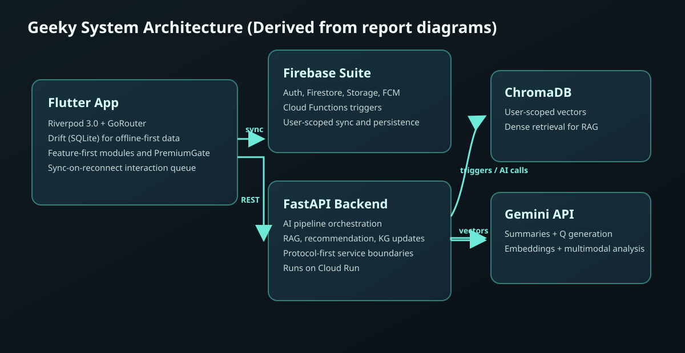
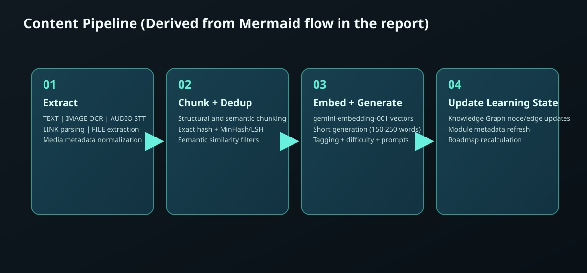
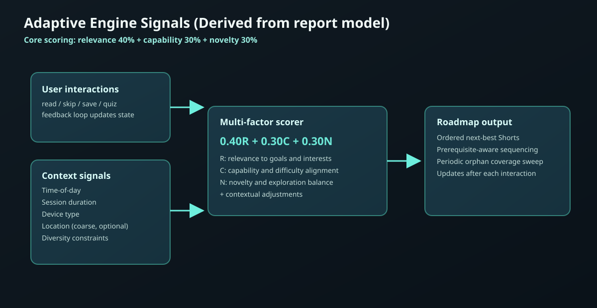

0
Feature modules
Offline-first | AI-powered | Adaptive learning
Geeky transforms user-captured content (text, links, files, images, and shared media) into bite-sized Shorts, maps them into a Knowledge Graph, and adapts recommendations after every interaction.
Feature modules
Drift tables
Data access objects
Core pipeline stages
Current status
Frontend includes offline persistence, module architecture, premium gates, and seeded local data. Backend services for AI processing and RAG are scaffolded and actively being implemented.
Why this exists
Learning material is spread across apps and formats; Geeky centralizes it into one structured workflow.
Deduplication and scoring reduce repeated or low-value content so users focus on what matters.
Shorts, quizzes, and interactions turn reading and watching into active learning.
Recommendation scores rebalance relevance, capability, and novelty per learner.
Spaced repetition with FSRS (20–30% fewer reviews than SM-2) targets 90% retention.
A graph-based model connects prerequisites, related concepts, and deeper paths.
Product scope
Accepts notes from text, links, files, images, audio/video workflows, and mobile sharing flows.
Processes content into concise Shorts with topic tags, difficulty estimates, and follow-up prompts.
Supports deeper, broader, next, and related exploration with dynamic edges and hierarchy-aware traversal.
Uses a multi-factor score (relevance, capability, novelty) and interaction history to reorder recommendations.
Hybrid retrieval, reranking, and grounded response generation over user-scoped content.
Local-first reads and queued interactions maintain usability while disconnected, then sync on reconnect.
Pipeline
Normalize content from mixed media into a unified representation.
Split by structure/semantics and remove exact, near, and semantic duplicates.
Store embeddings, generate Shorts, tag topics, and run consistency-aware checks.
Refresh concept relationships, module context, and each learner's next-best content.
Adaptive signals
Core scoring uses relevance (40%), capability (30%), and novelty (30%), then adjusts with contextual signals documented in the project reports.
Chronological usage patterns influence what appears next.
The model can prioritize lighter or deeper content depending on session timing and user response rhythms.
Optional city/state context can boost local relevance.
Region-specific sources get a moderate priority lift while preserving coverage diversity.
Short and long sessions can receive different content pacing.
The roadmap can favor concise items in brief sessions and deeper chains in longer study windows.
Read, skip, done, and quiz outcomes continually re-score items.
Personalization does not rely on a one-time profile; it updates after each interaction event.
Capability matching helps avoid content that is too easy or too hard.
Bayesian Knowledge Tracing (BKT) models per-concept mastery, updating after quiz results and interaction speed to calibrate progression.
Four-stage pipeline removes exact, near, semantic, and cross-modal duplicates.
Bloom filters screen fast, then exact hash/MinHash/embeddings ensure no repeated content drains learner attention.
Balance exploration (new topics) vs exploitation (high-relevance content).
Continuous learning without pigeonholing: curiosity is rewarded while expertise deepens along high-value paths.
Diagram gallery



/ 3 diagrams
Comparisons and profiles
From ProposalNew.md: Recommendation paradigm evaluation
| Recommendation approach | Mechanism | Explainability | Best fit |
|---|---|---|---|
| Path-based | Prerequisite chains | High | Structured curricula |
| Graph-based | Message passing on knowledge graph | Medium | Rich concept relationships |
| Collaborative filtering | User-behavior similarity | Medium | Implicit interaction signals |
| Hybrid (selected) | Path + scoring + contextual balance | High | Production personalization |
From ARCHITECTURE.md: Task-specific RAG retrieval profiles
| RAG profile | MMR lambda | Compression level | Output intent |
|---|---|---|---|
| Q&A | 0.8 | Aggressive | Precise answer with citations |
| Flashcard generation | 0.5 | Moderate | Coverage across sources |
| Summary | 0.6 | Light | Narrative synthesis |
| Mind map | 0.4 | Heavy | Maximum concept diversity |
Access model
| Capability | Free | Premium |
|---|---|---|
| Note ingestion and note feed | Full access | Full access |
| Knowledge Graph and RAG query | Locked | Full access |
| Quizzes and spaced repetition | Locked | Full access |
| Analytics depth | Basic | Full dashboard |
| Source limit | 3 sources | Unlimited |
| Store module downloads | 3 modules | Unlimited |
Architecture snapshot
Feature-first modules, Riverpod state management, GoRouter navigation, Drift local database, and Material 3 theming.
FastAPI services handle AI pipeline orchestration, retrieval workflows, recommendations, and business logic.
Firestore for app config and curated content, Firebase App Check for attestation, Cloud Run for compute, Redis for jobs and caching, Gemini for generation and embeddings.
Who benefits
Turn lectures, links, and notes into reviewable micro-content and revision flows.
Organize dense topics into concept relationships, source-backed summaries, and navigable clusters.
Maintain continuous upskilling from scattered daily content without losing context or recall.
Project team

Academic Mentor

Academic Mentor

Builder of Geeky